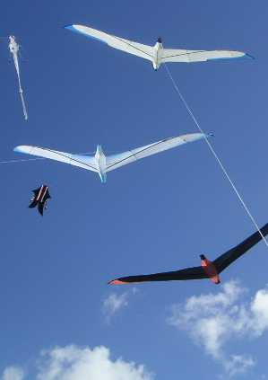

La geste de l'Albatros

Les Albatros ? Un vol divin !
Ca serait beau si j'en f'sais un.
Et ça dessine, cogitations
Et redessine, maturation !
Dessin des plans, les dimensions,
Bon, je m'y mets, j'fais les patrons.
Mais ça va mal, ça r'ssemble à rien !
Retour aux plans, n'hésitons point.
J'achète le spi et l'armature,
La ficelle et tout' la couture,
Plus qu'à y aller et découper,
Le spi, facile, mais t'jours droit fil.
Et puis couture, c'est pas l'plus dur,
Mais les renforts, ça c'est plus fort.
Faut du Dacron, et j'te pinaille,
Drôlement coton, ces p'tits détails !
Les ailes, ça biche, c'est tout en long,
Sous le pied-d'biche, elles passent tout rond.
Mais le fus'lage, là c'est la rage,
Pour faire 3D, faut maquetter !
Enfin tout y est, plus qu'à voler !
Facile à dire, faut essayer !
Zut, tire à gauche, penche côté droit,
Qu'est-c' que j'vais faire pour qu'il vole droit ?
Et des ficelles et des whiskers,
Et ça s'emmêle, c'est un bonheur !
Je te tatonne, j'te modifie,
Et plus ça va et plus c'est pis !
Faut s'arrêter, et cogiter...
Je crois qu'je l'ai, rebeloter
Pour les essais et les déroutes
Enfin ça y est, il tient la route !
Oui mais si j'monte et que le vent
Au lieu d'monter il redescend,
Part en piqué, mon cerf-volant !
Il faut trouver, pas évident...

Sel sur la queue, bride élastique,
Tous les moyens pour pas qu'ça pique,
Au lieu du sel, plutôt du plomb !
Enfin comme ça, il vole d'aplomb.
Mais c'est pas tout, seul dans mon coin :
Faut le montrer aux p'tits copains,
Aux amis et puis au public,
C'est pas fini, j'sais la musique !
Et d'jà au sol, aux premiers vols,
Gros emmêlage lors du montage,
Puis chute sur l'aile et y a d'la casse,
Mais j'change la canne et j'la repasse.
Aux premières heures, Forc'trois j'ai peur,
Mais p'tit à p'tit, c'est Force six.
Puis j'me fais prendre à Force huit
Et l'Albatros jamais n'faiblit !
On n'hésite plus, toujours en l'air,
Les festivals, on n'arrête guère
L'est tellement beau et puis son vol :
Un vrai oiseau, épouse Eole.
Maint'nant les plans pour le Lucane,
Pour qu'les fanas soient pas en panne :
Faut publier pour les copains,
Ecrire l'article, faire les dessins.
Après l'Lucane, passer au site,
Sur Internet le mettre à lire,
Le signaler, voir les visites,
Et pour l'AKA, il faut traduire !
Petit à p'tit, il gagne des coupes.
Et ça construit, y en a des tas,
Enfin, quoi, six (1). En vol de groupe
C'est magnifique, merci les gars !
(1) Maintenant seize, en 2013, dont un motorisé et télécommandé mais le vers a trop de pieds si je change !
Dédié à ceux qui ont courageusement et malgré les doutes construit un Albatros suivant exactement mes plans ou interprété à leur façon, avec un résultat qui m'émerveille toujours. Maxime